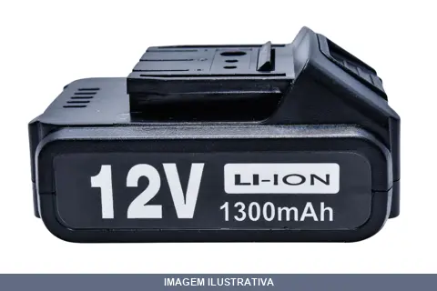
BATERIA DE IONS DE LITIO 12V PARA PARAF E FURAD LOTUS
Bateria de íons de lítio 12V 1300mAh para furadeira e parafusadeira Lotus. Tecnologia Li-Ion sem efeito memória, oferecendo autonomia, menor peso e desempenho confiável para aplicações profissionais e domésticas.
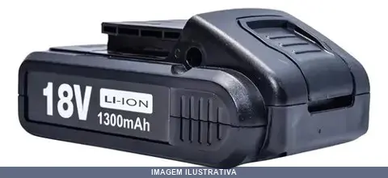
BATERIA DE IONS DE LITIO 18V PARA PARAF E FURAD LOTUS
Bateria recarregável com tecnologia íons de lítio, voltagem 18V e capacidade de 1300mAh. Compatível com parafusadeira e furadeira Lotus 18V. Leve e sem efeito memória. Design robusto com encaixe seguro para instalação rápida.
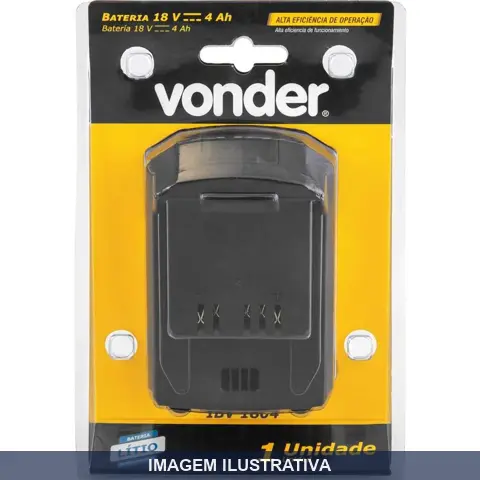
BATERIA INTERCAMBIAVEL LITIO IBV VONDER
Indicação de Uso: Ferramentas a bateria intercambiável VONDER 18V. Material e Resistência: Bateria de íons de lítio com indicador de carga com três LEDs, base emborrachada e entrada de ar para refrigeração. Sistema de refrigeração integrado mantém desempenho estável. Peso aproximado: 0,5 kg. Vantagem Prática: Compatível com linha intercambiável VONDER, permitindo uso em diferentes ferramentas. Indicador de nível de carga com LEDs: um aceso (baixa carga),
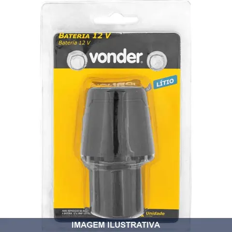
BATERIA PARA MAQUINA ASSENTAR PISO PARA MAP VONDER
Indicação de Uso: Reposição para máquinas de assentar piso MAP 120 e MAP 125. Material e Resistência: Bateria recarregável com células de íons de lítio, tensão 12V, capacidade 2,2 Ah. Dimensão/Peso: 0,182 kg.
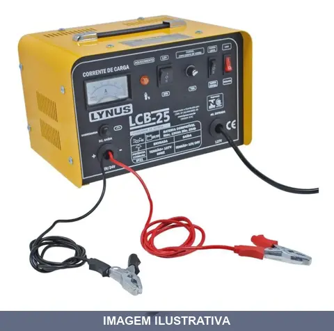
CARREGADOR BAT 150AH LYNUS 127V
Carregador de bateria para recarregar baterias de 150AH em 127V. Possui função de carga rápida e carga lenta. Aviso luminoso de bateria carregada e superaquecimento. Fusível de entrada para proteção. Grau de proteção IP21.
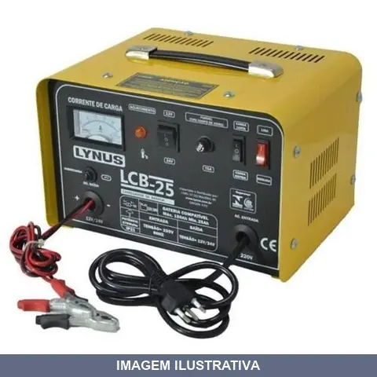
CARREGADOR BAT 150AH LYNUS 220V
Indicação de Uso: Carregador de bateria para veículos e equipamentos com bateria de 150Ah em alimentação 220V. / Material e Resistência: Fusível de entrada para proteção da rede elétrica. Grau de proteção IP21. / Vantagem Prática: Dispõe de função de carga rápida para emergências e carga lenta para preservação da bateria. Aviso luminoso indica conclusão da carga e superaquecimento.
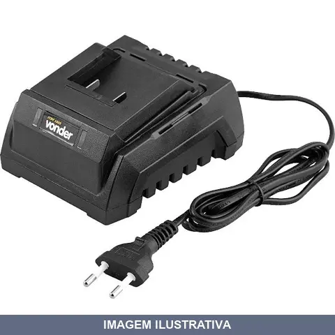
CARREGADOR BAT ICBV BIVOLT VONDER
Carregador de bateria bivolt indicado para carregar baterias de ferramentas e equipamentos portáteis. Funciona em 127V e 220V, permitindo uso em diferentes ambientes. Material resistente adequado para ambiente de trabalho e oficina.
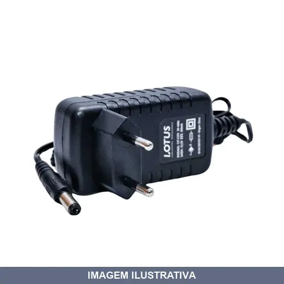
CARREGADOR DE BATERIA 12V P/PARF E FURAD LOTUS
Indicação de Uso: Carregamento de baterias para furadeiras e parafusadeiras Lotus. Material e Resistência: Estrutura funcional com sistema de carregamento confiável. Entrada bivolt automática 127-220V~50-60Hz. Vantagem Prática: Carregamento eficiente, seguro e rápido, mantendo ferramentas sempre prontas para o trabalho.

CARREGADOR DE BATERIA 18V P/PARF E FURAD LOTUS
Indicação de Uso: Carregamento de baterias para furadeiras e parafusadeiras Lotus. Material e Resistência: Estrutura funcional com sistema de carregamento confiável. Entrada bivolt automática 127-220V~50-60Hz. Vantagem Prática: Carregamento eficiente, seguro e rápido, mantendo ferramentas sempre prontas para o trabalho.

CHAVE IMPACTO , KGT.M CIV COM VONDER
Chave de impacto elétrica alimentada em 127V, com potência de 900W e torque de 32,0 kgf.m. Indicada para afrouxar e apertar parafusos e porcas em trabalhos de manutenção, desmontagem e montagem de peças. Acompanha 6 peças complementares para maior versatilidade de uso.
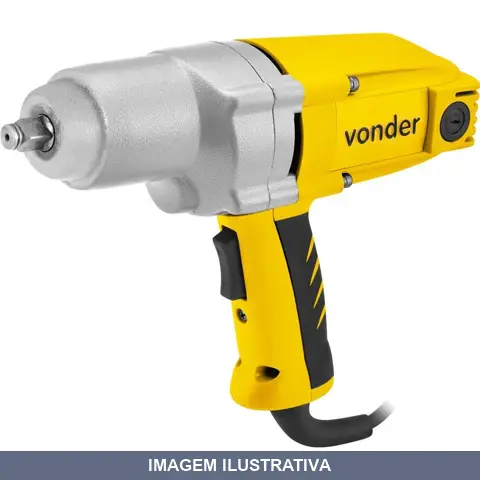
CHAVE IMPACTO , KGT.M CIV VONDER
Indicação de Uso: Ferramenta elétrica para aperto e desaperto de parafusos e porcas em trabalhos de manutenção, montagem e desmontagem industrial. Material e Resistência: Construção robusta em metal, desenvolvida para suportar impactos contínuos em aplicações pesadas. Vantagem Prática: Sistema de impacto potencializa a força de torque, facilitando a soltura de elementos travados e agilizando tarefas de fixação.
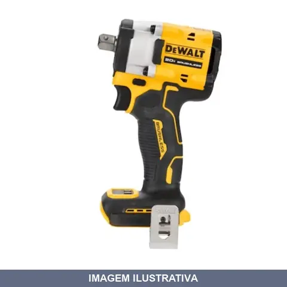
CHAVE IMPACTO 20V XR 1/2 SEM BATERIA SEM CARREGADOR DEWALT
Chave de impacto de encaixe quadrado com motor brushless para eficiência e maior vida útil. Tamanho 20V | 1/2. Controle variável de velocidade para diferentes aplicações. Mandril com pino de retenção. Luz LED para visibilidade em ambientes com pouca iluminação. Funciona com bateria 20V MAX compatível (não inclusos). Fornecido sem bateria e sem carregador.

CHAVE IMPACTO 20V XR 3/4 SEM BATERIA SEM CARREGADOR DEWALT
Chave de impacto de encaixe quadrado com motor brushless para eficiência e maior vida útil. Tamanho 20V | 3/4. Controle variável de velocidade para diferentes aplicações. Mandril com pino de retenção. Luz LED para visibilidade em ambientes com pouca iluminação. Funciona com bateria 20V MAX compatível (não inclusos). Fornecido sem bateria e sem carregador.
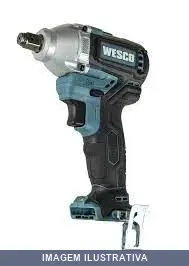
CHAVE IMPACTO COM BATERIA .0AH CARREGADOR 60MIN WESCO
Chave de impacto sem fio com motor brushless e bateria de 18V. Encaixe quadrado 1/2". Inclui bateria de lítio e carregador bivolt com tempo de carregamento rápido de aproximadamente 60 minutos. Operação de aperto e desaperto de parafusos, porcas e fechos roscados. Velocidade variável reversível, luz LED integrada e empunhadura emborrachada. Peso aproximado de 1,1 kg, design ergonômico para reduzir fadiga. Motor brushless proporciona maior eficiência energética e durabilidade. Indicado para
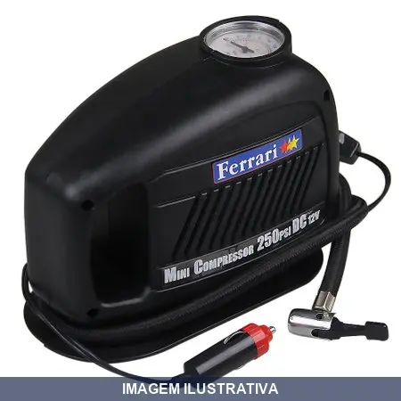
COMPRESSOR MINI FERRARI
MINI COMPRESSOR TURBO AIR MCTA-12 Mini compressor de ar • Possui aletas nas laterais para uma maior refrigeração do motor • Equipado com alça para transporte • Maior apoio na base • Ideal para inflar pneus em caso de emergência, bolas e colchões de piscina ou similares • Ligado ao acendedor de cigarros dos veículos com bateria de 12 volts • Informações Técnicas: - Potência: 120 Watts - Tensão Nominal: 12 Volts - Pressão máxima de trabalho: 30 PSI - Pressão descarga máxima do manômetro: 250 PSI
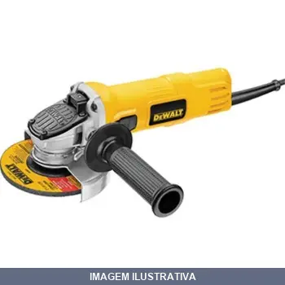
ESMERILHADEIRA ANGULAR DEWALT 4.1/2 110V 800W [010929]
Indicação de Uso: Trabalhos de corte, desbaste e polimento em metal, alvenaria e materiais similares em serralherias, fundições e canteiros de obra / Material e Resistência: Caixa de engrenagens super-compacta com engrenagens helicoidais / Vantagem Prática: Empunhadura de 2 posições para maior controle, gatilho deslizante para conforto em operações prolongadas, cabo emborrachado de 2,5m, design ergonômico e compacto.
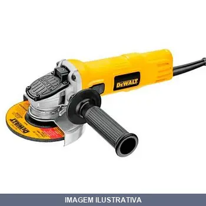
ESMERILHADEIRA ANGULAR DEWALT 4.1/2 220V 0800W 900W
Esmerilhadeira angular para trabalhos de corte, desbaste e polimento em metal, alvenaria e materiais similares. Alimentação em 220V. Ferramenta portátil adequada para aplicações em construção, reformas, manutenção e trabalhos industriais.
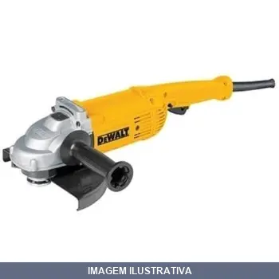
ESMERILHADEIRA ANGULAR DEWALT 7POL 220V 2200W [010930]
ESMERILHADEIRA ANGULAR 7'' 220V Engrenagens Helicoidais Caixa de engrenagens em alumínio Interruptor selado Possui proteção contra abrasão e escovas autodesligante Nova posição de trava do disco - Diminui o risco de travamento acidental da máquina Gatilho com trava - Maior conforto para aplicações prolongadas Acompanham Empunhadura lateral de 2 posições, chave de aperto e guarda de proteção 100% Rolamentada Uso em Serralherias, Fundições, Funilarias, Metalurgicas, Departamentos de manutenção e C
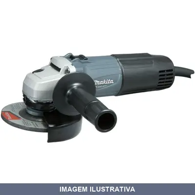
ESMERILHADEIRA ANGULAR MAKITA
Indicação de Uso: Trabalhos de desbaste, corte e acabamento em metal, pedra e concreto. / Material e Resistência: Corpo com dupla isolação, disco de 115mm, rotação de 12.000 rpm. / Vantagem Prática: Gatilho deslizante, corpo compacto e punho lateral para melhor controle e segurança operacional.
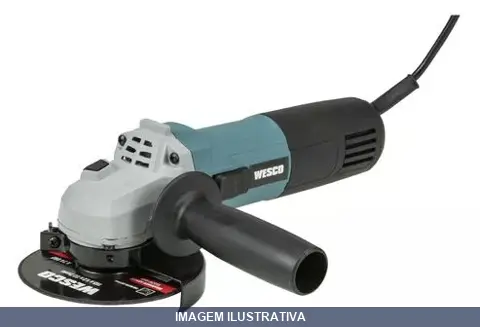
ESMERILHADEIRA ANGULAR WESCO
Indicação de Uso: Esmerilhadeira angular para trabalhos de desbaste, corte e acabamento em metais, concreto e outros materiais. Material e Resistência: Estrutura em alumínio. Vantagem Prática: Ferramenta elétrica versátil para uso em construção, manutenção e trabalhos industriais.
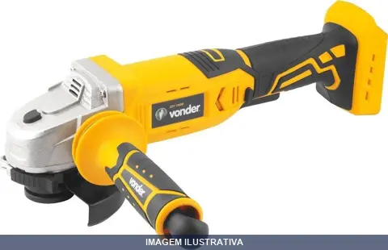
ESMERILHADEIRA BATERIA INTERCAMBIAL IEV VONDER
Indicação de Uso: Corte, desbaste e acabamento em superfícies metálicas. Material e Resistência: Estrutura compacta com botão de trava do eixo e dupla isolação. Vantagem Prática: Punho auxiliar com duas posições de fixação. Compatível com baterias e carregadores intercambiáveis da linha Vonder (vendidos separadamente).
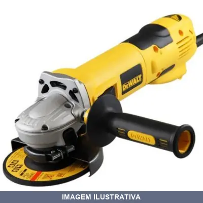
ESMERILHADEIRA COM CONTRLE VELOCIDADE DEWALT
Indicação de Uso: Desbaste, polimento e acabamento em trabalhos gerais com metal e alvenaria. / Material e Resistência: Motor de alta potência com gerenciamento eletrônico de 5 velocidades, mantém rotação constante sob cargas. / Vantagem Prática: Embreagem eletrônica desliga o motor em frações de segundo ao detectar contragolpe; proteção de sobrecarga; chave de segurança que mantém motor desligado após interrupção de energia mesmo com interruptor acionado.
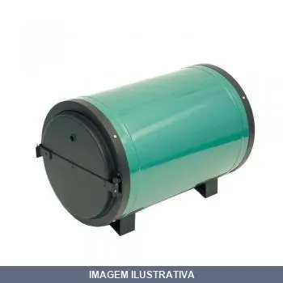
ESTUFA ECG50 CARBOGRAFITE
Estufa elétrica 220V para secagem e armazenamento de eletrodos. Equipamento com controle de temperatura para manutenção ideal de eletrodos ressecados, evitando umidade e degradação. Ideal para oficinas de soldagem, manutenção industrial e setores de fabricação que necessitam preservar a qualidade dos eletrodos durante estocagem.
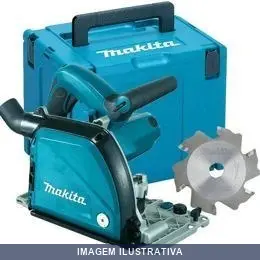
FRESADORA DE ACM MAKITA
Fresadora específica para cortes e vincos em placas de alumínio compósito (ACM). Potência de 1.300W com rotação de 2.600 a 6.400 RPM. Controle eletrônico de velocidade, partida suave e freio instantâneo. Dupla isolação. Profundidade de corte de 11mm com disco de 118mm de diâmetro. Adaptável a coletor e aspirador de pó. Acompanha disco fresador e maleta MAK-PAC.
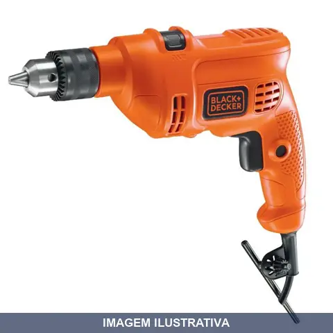
FURADEIRA COM IMPACTO BLACK & DECKER
Furadeira com função de impacto, alimentação 127V e potência 560W. Indicada para perfuração em materiais diversos e trabalhos que exigem força de impacto. Equipamento portátil adequado para uso profissional e doméstico em aplicações de construção, manutenção e montagem.
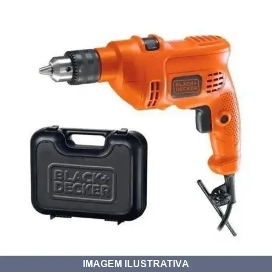
FURADEIRA COM IMPACTO COM MALETA BLACK & DECKE
Furadeira com impacto para perfurações em alvenaria, metal e madeira. Equipada com mandril, trava de gatilho para uso contínuo, porta-chave no cabo, gatilho de dois dedos e empunhadura ergonômica. Acompanha maleta para transporte e proteção.

FURADEIRA COM IMPACTO COM MALETA BLACK & DECKER
Furadeira com impacto da Black+Decker, equipada com motor de 560W e velocidade de até 2.800 RPM. Sistema de impacto de até 45.000 IPM, ideal para perfuração em madeira, metal e alvenaria. Possui gatilho de dois dedos com trava para uso contínuo, seletor de impacto ou rotação, empunhadura ergonômica e porta-chave de mandril no próprio cabo. Acompanha maleta de transporte.

FURADEIRA COM IMPACTO CON MALETA BLACK & DECK
Furadeira de impacto com motor 560W e velocidade de até 2.800 rpm. Funciona em impacto ou rotação simples, ideal para perfuração em madeira, metal e alvenaria com capacidade até 25mm em madeira e 13mm em metal e alvenaria. Mandril 3/8" com trava contínua, empunhadura ergonômica e reversível. Acompanha maleta e 9 brocas sortidas.
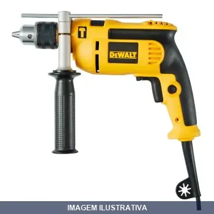
FURADEIRA COM IMPACTO DEWALT 1/2 110V 710W
Indicação de Uso: Furação com impacto em madeira, alvenaria e metal. / Material e Resistência: Mandril de precisão, empunhaduras emborrachadas e laterais para estabilidade. / Vantagem Prática: Gatilho eletrônico com dois dedos e trava para uso contínuo, porta-chave no cabo, guia de profundidade e chave de mandril inclusos.
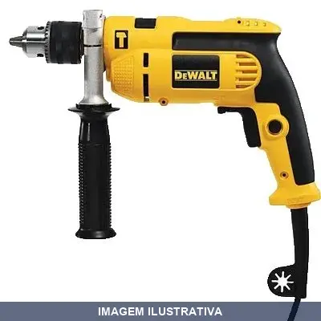
FURADEIRA COM IMPACTO DEWALT 1/2 220V 710W
Furadeira de impacto reversível com motor de 710W, velocidade variável de 0 a 2.600 RPM e até 44.200 impactos por minuto. Mandril 1/2" (13 mm) com trava de aperto rápido. Motor apoiado em rolamentos de esferas. Empunhadura lateral 360° e emborrachada para maior controle e conforto. Velocidade reversível com trava para uso contínuo. Indicada para perfuração em madeira, aço, alvenaria e concreto, além de cortes e desbastes em metais.
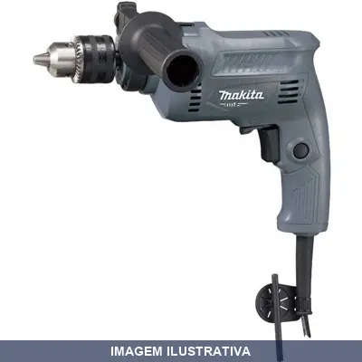
FURADEIRA COM IMPACTO REVER MAKITA
FURADEIRA DE IMPACTO 220V Características Perfuração em concreto de até 16mm. Dupla isolação. Velocidade variável. Rotação reversível. Especificações Potência: 550W Capacidades Concreto: 16mm Metal: 13mm Madeira: 20mm Impactos por minuto: 0 - 43.500 Rotações por minuto: 0 - 2.900 Dimensões (C x L x A): 262 x 70 x 196mm Peso: 1.7kg Itens que acompanham Chave de mandril e punho lateral
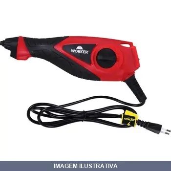
GRAVADOR ELETRICO WORKER
Indicação de Uso: Gravação e marcação de superfícies em trabalhos de construção, metalurgia e manutenção. Material e Resistência: Construído para operação contínua em ambiente de trabalho. Vantagem Prática: Alimentação elétrica 220V para uso em canteiros e oficinas, dispensando geradores portáteis.
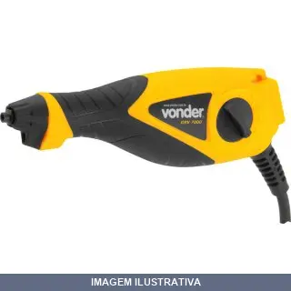
GRAVADOR PULSOS ELET 127V
Indicação de Uso: Gravação ou decoração em metais, vidros, pedras, plásticos rígidos e madeiras. Material e Resistência: Design leve e compacto. Vantagem Prática: Ajuste de curso em 9 posições para regular profundidade de gravação e luz LED para operação em áreas com pouca iluminação, proporcionando gravações de precisão.
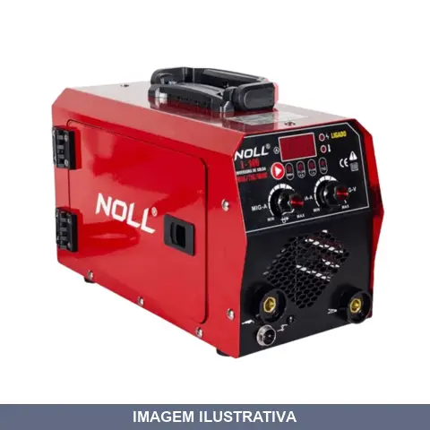
INVERSORA DE SOLDA - MIG/TIG/MMA /60HZ NOLL
Inversora multiprocesso NOLL com tecnologia IGBT para processos MIG, TIG e MMA. Compatível com eletrodos revestidos, arames tubulares e soldagem TIG. Corrente de saída de 30 a 140A. Estrutura compacta com placa frontal de aço. Resfriamento por ventilador com proteção termostática. Capacidade para carretéis de arame de até 5kg. Frequência 60Hz.
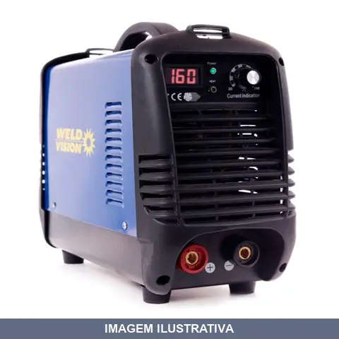
INVERSORA DE SOLDA BIVOLT WELD VISION 160
Indicação de Uso: Soldagem de peças metálicas em trabalhos diversos. Material e Resistência: Equipamento eletrônico destinado a operações de soldagem. Vantagem Prática: Funciona em bivolt, adaptando-se a diferentes fontes de energia disponíveis no canteiro de obra ou oficina.
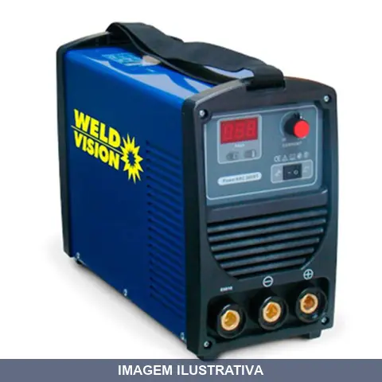
INVERSORA DE SOLDA BIVOLT WELD VISION 200
Inversora de solda com capacidade de 200A, funcionamento em bivolt (110V e 220V). Equipamento destinado a trabalhos de soldagem em geral, tanto em ambientes profissionais quanto em aplicações diversas que requeiram soldagem elétrica. A tecnologia inversora permite operação eficiente com controle do arco de solda.
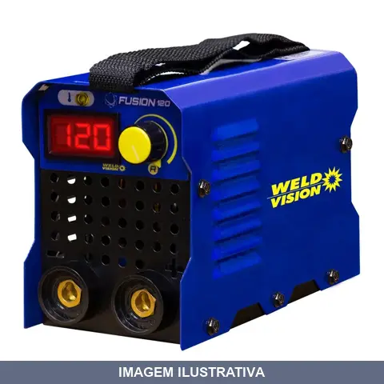
INVERSORA DE SOLDA WELD VISION
Indicação de Uso: Soldagem de estruturas metálicas, reparos e trabalhos gerais de solda. Material e Resistência: Equipamento inversor para uso com voltagem 220V. Vantagem Prática: Tecnologia inversora proporciona soldagem mais estável e controle aprimorado do arco.
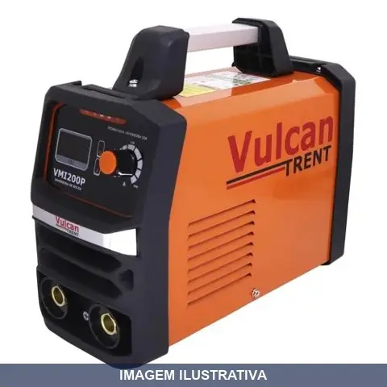
INVERSORA SOLDA AMPERES BIVOLT VMI161 VULCAN
Máquina inversora de solda bivolt 127/220V com painel digital analógico. Realiza solda MMA (eletrodo revestido) e TIG. Corrente de saída de 100A a 160A. Compatível com eletrodos E6013 e E7018. Indicada para oficinas, serralherias, manutenção de máquinas agrícolas e montagem de estruturas metálicas. Solda aço carbono, ligas, aço inoxidável e ferro fundido. Inclui cabos com engate rápido, máscara, escova de aço e alça.
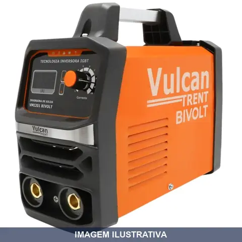
INVERSORA SOLDA AMPERES BIVOLT VMI201 VULCAN
Indicação de Uso: Equipamento para soldagem em geral, com capacidade de 200 amperes. Funciona em bivolt, permitindo uso em diferentes fontes de energia elétrica. Vantagem Prática: A tecnologia inversora proporciona operação eficiente e controle preciso da corrente de soldagem.
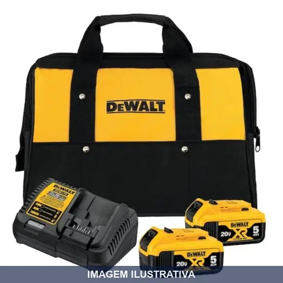
KIT BATERIAS 5AH COM CARREGADOR+BOLSA DEWALT
Indicação de Uso: Fonte de energia para ferramentas elétricas sem fio da linha 20V MAX DeWalt. Material e Resistência: Baterias de íon de lítio livres do efeito memória com indicador de 3 LEDs para controle do nível de carga. Carregador bivolt (110V/220V) compatível com ferramentas 20V MAX DeWalt. Bolsa de transporte reforçada para armazenamento e mobilidade. Vantagem Prática: Composição do kit com duas baterias de alta capacidade, carregador rápido e bolsa dedicada oferece autonomia,
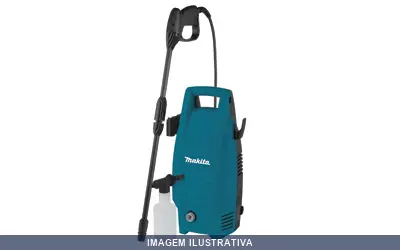
LAVADORA HW101 MAKITA
Lavadora de alta pressão 1450 psi alimentação 220V. Indicação de Uso: limpeza de veículos, fachadas, pátios e superfícies externas. Material e Resistência: pistões em aço inox, motor elétrico com bomba oscilante. Vantagem Prática: alça para transporte, sistema de parada automática, vazão máxima 360 l/h.

LAVADORA VONDER 1300 127V
1 Lavadora de alta pressão. Acompanha: 1 acessório para detergente, 1 mangueira de alta pressão com 3 m, 1 cordão elétrico com 5 m, 1 lança com bico ajustável, 1 pistola com gatilho e 1 conector 1/2". Uso doméstico. Indicada para limpezas em geral com maior remoção de sujeira devido a alta pressão de saída da água. Conta com sistema que gera mais pressão e libera menos água, tornando-a mais eficiente e diminuindo desperdícios. Em média, uma torneira aberta consome 1.800 litros de água por hora.
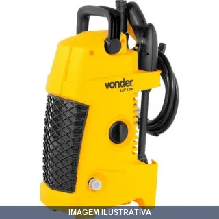
LAVADORA VONDER 1300 220V
1 Lavadora de alta pressão. Acompanha: 1 acessório para detergente, 1 mangueira de alta pressão com 3 m, 1 cordão elétrico com 5 m, 1 lança com bico ajustável, 1 pistola com gatilho e 1 conector 1/2". Uso doméstico. Indicada para limpezas em geral com maior remoção de sujeira devido a alta pressão de saída da água. Conta com sistema que gera mais pressão e libera menos água, tornando-a mais eficiente e diminuindo desperdícios. Em média, uma torneira aberta consome 1.800 litros de água por hora.
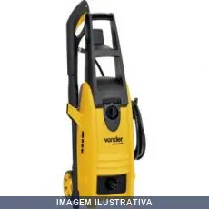
LAVADORA VONDER 1800 220V
Lavadora de alta pressão alimentada por energia elétrica em 220V. Indicada para limpeza de superfícies, fachadas, pisos e equipamentos. Utiliza jato de água pressurizado para remover sujeiras e resíduos. Aplicável em uso residencial e leve-comercial.
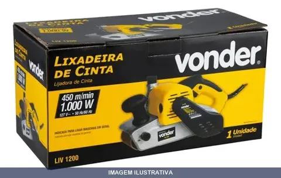
LIXADEIRA DE CINTA LIV1200 VONDER
Indicação de Uso: Lixamento de superfícies em madeira, metal e outros materiais. Material e Resistência: Estrutura robusta adequada para trabalhos contínuos. Vantagem Prática: Ferramenta elétrica portátil que realiza lixamento linear com cinta abrasiva, permitindo acabamento uniforme em grandes áreas.
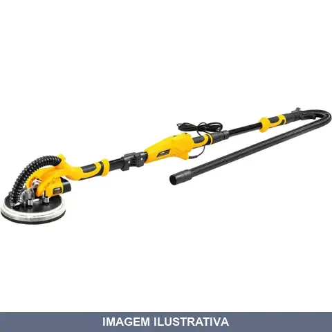
LIXADEIRA DE PAREDE LPV600 COM LED VONDER
Indicação de Uso: Lixamento e desbaste em paredes e tetos de alvenaria, gesso e massa corrida (não usar em massa corrida acrílica). Material e Resistência: Motor com dupla isolação. Velocidade variável de 600 a 1.500 rpm. Vantagem Prática: Luz LED integrada para iluminação da área de trabalho. Cabeça articulada que segue contornos da superfície. Capa de proteção removível para lixamento de cantos. Cabo dobrável para transporte compacto.
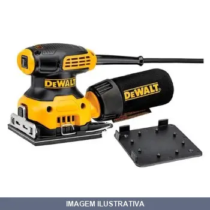
LIXADEIRA ORBITAL DEWALT
LIXADEIRA ORBITAL 127V 1/4'' DE FOLHA Uso em marcenarias, carpintarias, fábricas de móveis, funilarias e pintores (preparadores de massa corrida). 225 W 14.000 OPM Base de 1/4 de folha de lixa Sistema de contrapeso Interruptor selado contra pó Acompanha coletor de pó e perfurador de lixa 1,4 kg DWE6411-BR - 110V Especificações Potência 225W Orbita por minuto 14.000 OPM Peso 1,4kg
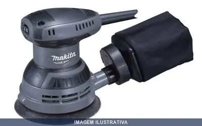
LIXADEIRA ROTORBITAL MAKITA
Indicação de Uso: Lixamento e acabamento de superfícies em madeira, metal e plástico. / Material e Resistência: Base e plataforma em alumínio, dupla isolação elétrica. / Vantagem Prática: Freio instantâneo, sistema de velcro para fixação de lixa, adaptável a coletor de pó, 12.000 oscilações por minuto para desbaste eficiente.
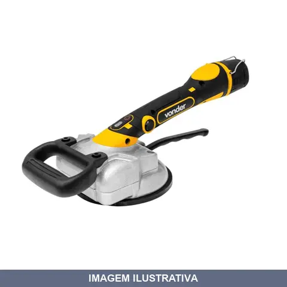
MAQUINA ASSENTAR PISO BATERIA MAP125 VONDE
Indicação de Uso: Assentar porcelanatos e pisos em geral em superfícies lisas. Material e Resistência: Ventosa com alto poder de sucção e vibração. Motor 180W. Bateria 12V de íons de lítio com capacidade de carga de 50 kgf. Vantagem Prática: Regulagem em 5 níveis de vibração com display. Punho auxiliar para ergonomia. Acompanha maleta plástica, bateria e fonte bivolt automático.
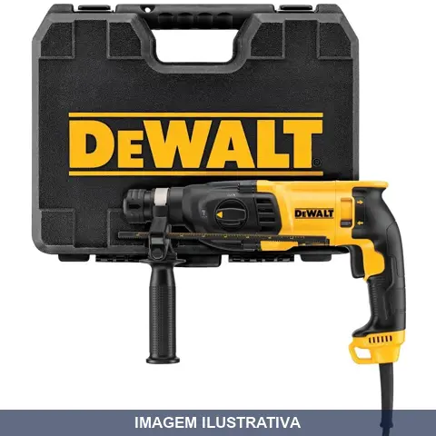
MARTELETE ELETROP PERF E ROMP SDS PLUS DEWALT 1 110V 800W [015527]
Martelete elétrico com funções de perfuração e rompimento. Equipado com encaixe SDS Plus para fixação rápida de acessórios. Alimentação em 110V com potência de 800W. Indicado para perfuração e demolição em alvenaria, concreto e materiais similares. Ferramenta profissional para trabalhos em construção, reforma e manutenção predial.
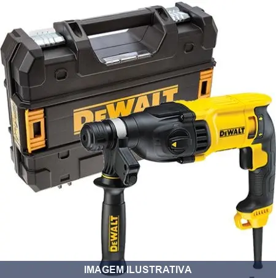
MARTELETE ELETROP PERF E ROMP SDS PLUS DEWALT 1 220V 800W [011958]
Indicação de Uso: Perfuração e rompimento de alvenaria, concreto e materiais similares. Material e Resistência: Construído para trabalhos em alvenaria e concreto com sistema SDS Plus. Vantagem Prática: Ferramenta elétrica 220V para serviços de demolição e perfuração em estruturas de concreto e alvenaria.
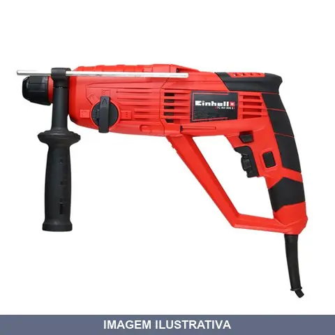
MARTELETE ELETROP PERF E ROMP SDS PLUS EINHELL
Martelete eletropneumático para perfuração e rompimento. Encaixe SDS Plus de troca rápida. Potência de 800 W com 2,5 Joules de força. Quatro funções: sem impacto, com impacto, rompimento e pré-seleção da talhadeira. Velocidade eletrônica variável. Mandril SDS-Plus. Acompanha maleta, punho auxiliar e limitador de profundidade em metal.
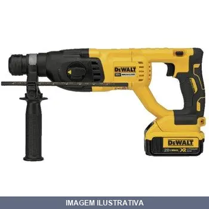
MARTELETE PERF E ROMP SDS P ( ) MAX DEWALT
Martelete perfurador e rompedor com motor brushless 20V MAX, encaixe SDS Plus. Oferece 3 funções: perfuração com impacto, perfuração sem impacto e rompimento. Ideal para trabalhos em concreto, alvenaria e madeira. Equipado com sistema anti-vibração e tecnologia de bateria Li-Ion. Fornece 2,6 joules de energia de impacto.
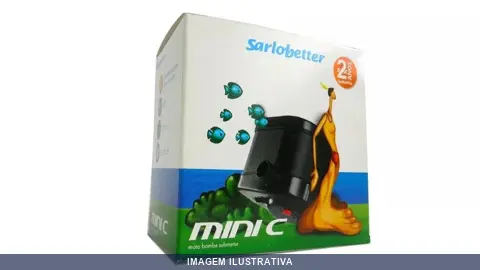
MOTO BOMBA MINI C SARLO BETTER
Indicação de Uso: Bombeamento de água para sistemas de irrigação, abastecimento e circulação em aplicações residenciais e comerciais. Material e Resistência: Motor elétrico com alimentação 110V. Vantagem Prática: Equipamento compacto e portátil, ideal para uso em locais com espaço reduzido.

MOTO BOMBA SUBMERSA S090 OEM SARLO BETTER
Moto bomba submersa para bombeamento de água em poços, cisternas e reservatórios. Funciona em tensão 110V. Indicada para aplicações de abastecimento, drenagem e transferência de água. Operação submersa com motor integrado à bomba.

MOTO BOMBA SUBMERSA S140 OEM SARLO BETTER
Moto bomba submersa para captação e recalque de água em poços, cisternas e reservatórios. Funcionamento totalmente imerso em líquido. Alimentação em corrente alternada 110V. Aplicável em sistemas de abastecimento residencial e pequenas obras.

MOTO BOMBA SUBMERSA S300 OEM SARLO BETTER
Indicação de Uso: Bombeamento de água em poços, cisternas e reservatórios submersos. / Material e Resistência: Corpo em plástico resistente com isolamento à prova d'água (IPX8), adequado para imersão contínua. / Especificações: Alimentação 220V monofásico, vazão de 280 L/h, coluna d'água de 89 cm. / Vantagem Prática: Instalação direta em ambientes submersos com proteção contra infiltração de água.
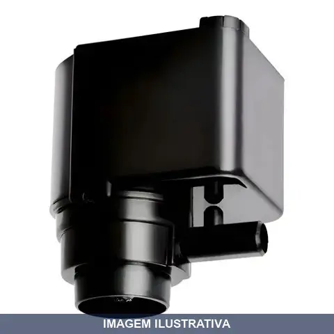
MOTO BOMBA SUBMERSA S520 OEM SARLO BETTER
Moto bomba submersa alimentada em 110V, destinada a aplicações de bombeamento em poços, cisternas e ambientes submersos. Corpo externo em plástico resistente à corrosão. Operação submersível sem necessidade de instalação em superfície.

MOTO BOMBA SUBMERSA SB2000 OEM SARLO BETTER
Moto bomba submersa para bombeamento de água em poços, cisternas e reservatórios. Funciona em tensão 110V. Indicada para aplicações de abastecimento, drenagem e transferência de água. Operação submersa com motor integrado à bomba.
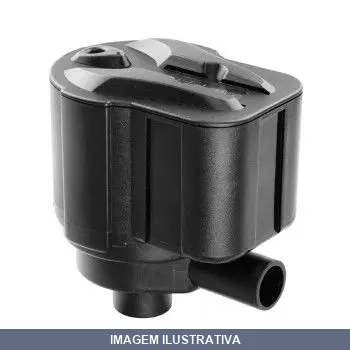
MOTO BOMBA SUBMERSA SB2700 OEM SARLO BETTER
Moto bomba submersa alimentada em 110V, indicada para bombeamento de água em poços, cisternas e reservatórios. Equipamento com motor acoplado direto ao conjunto de bombeamento, permitindo operação submersa. Aplicável em atividades de abastecimento, drenagem e transferência de água.
MOTO ESM BIV USO DOMEST KALA
Moto Esmeril de Bancada - Kala - 300W - 6" Bivolt com chave seletora Bases de apoio ajustaveis Acompanha 2 discos abrasivos de 6" Aparador de faíscas
MOTOCOMP ,3PES HOBBY /3HP / MOTOMIL
Compressor de ar para uso hobby com motor de 1/3 HP e alimentação bivolt (110/220V). Indicado para trabalhos pontuais com ferramentas pneumáticas, inflagem de pneus e limpeza com ar comprimido. Equipamento portátil apropriado para oficinas, garagens e ambientes domésticos.
MOTOCOMP 2HP LBS110/ MOTOMIL
Motocompressor Motomil 2HP monofásico bivolt (127/220V) com reservatório de 24 litros, pressão máxima de 120 PSI e deslocamento de 8,7 PCM. Indicado para limpeza de peças, pequenas pinturas, pulverizações e acionamento de ferramentas pneumáticas. Lubrificado com óleo, motor com 2 polos e frequência de 60 Hz.
PARAFUSADEIRA DE PRECISAO A BATERIA TIPO CANETA VONDE
Indicação de Uso: Fixar e soltar parafusos em trabalhos de precisão, como placas eletrônicas, computadores, monitores, smartphones, câmeras fotográficas e pequenos objetos. Material e Resistência: Bits em material S2 com durabilidade reforçada. Bateria de lítio recarregável 3,7V com proteção contra sobrecarga e indicador de carregamento. Carregamento via cabo USB tipo C. Vantagem Prática: 3 LEDs auxiliares para iluminação da área de trabalho. Magnetizador/desmagnetizador integrado ao estojo.
PARAFUSADEIRA PFV ENCAIXE SEXTAVADO VONDE
Indicação de Uso: Parafusadeira elétrica para parafusos e aplicações de fixação em geral. Material e Resistência: Construção robusta em plástico resistente, com colar metálico e encaixe sextavado para compatibilidade com pontas e acessórios padrão. Vantagem Prática: Alimentação 127V com potência 500W, proporciona torque consistente para trabalhos em madeira, drywall e materiais similares.
PARAFUSADEIRA/FURAD BATERIA 12V CARREG BIVOLT WESCO
Indicação de Uso: Perfuração em madeira, metal e outros materiais, além de parafusamento e desparafusamento. Material e Resistência: Bateria de lítio com carregador bivolt de carregamento rápido. Vantagem Prática: Ferramenta sem fio com mandril de aperto rápido, velocidade variável reversível e controle de torque, oferecendo praticidade e liberdade de movimento para reparos e trabalhos profissionais.
PARAFUSADEIRA/FURAD BATERIA 12V COM IMPACTO LOTUS
Parafusadeira e furadeira com bateria de 12V e função de impacto. Indicada para parafusamento, furação e trabalhos que exigem maior potência de penetração em materiais diversos. Versátil para uso profissional e doméstico em construção, montagem e manutenção.
PARAFUSADEIRA/FURAD BATERIA 18V CARREG BIVOLT WESCO
Indicação de Uso: Perfuração em madeira, metal e outros materiais, além de parafusamento e desparafusamento. Material e Resistência: Bateria de lítio com carregador bivolt de carregamento rápido. Vantagem Prática: Ferramenta sem fio com mandril de aperto rápido, velocidade variável reversível e controle de torque, oferecendo praticidade e liberdade de movimento para reparos e trabalhos profissionais.
PARAFUSADEIRA/FURAD BATERIA 18V COM IMPACTO LOTUS
Indicação de Uso: Parafusagem, furação e trabalhos com impacto em diversos materiais. Material e Resistência: Estrutura robusta para uso profissional e doméstico. Vantagem Prática: Alimentação por bateria 18V oferece mobilidade e autonomia para trabalhos sem necessidade de tomada.
PARAFUSADEIRA/FURAD BATERIA BIVOLT COM MALETA DEWALT
PARAFUSADEIRA / FURADEIRA IMPACTO 13MM 20 V MAX B. ION BIVOLT DCD776C2 Características Mandril sem chave 1/2" ( 13 mm ) - Aperto rápido - Permite troca de acessórios de forma rápida Gatilho Eletrônico com Velocidade Variável e Reversível Luz de LED - Permite ao usuário maior visibilidade na área de trabalho COMPACTA E LEVE Empunhadura emborrachada Maior controle e comodidade ao usuário Baterias flexíveis com o mesmo encaixe de 1,5 Ah e 3,0 Ah ( podem ser compradas a parte ) Acompanha Carregador,
PARAFUSADEIRA/FURAD BATERIA BIVOLT DEWALT
Parafusadeira e furadeira com bateria de íon de lítio 12V bivolt. Mandril sem chave com aperto rápido para troca de acessórios. Gatilho eletrônico com velocidade variável e reversível. Compacta e leve. Acompanha bolsa, carregador e 2 baterias. Indicação de Uso: indústrias, marcenarias, oficinas mecânicas e departamentos de manutenção.
PARAFUSADEIRA/FURAD BATERIA BIVOLT PFV012 VONDER
Indicação de Uso: Soltar e apertar parafusos de até 6 mm de diâmetro; fazer furos em madeiras, metais e alvenaria. Material e Resistência: Bateria de íons de lítio 12V com 1,3 Ah; carregador bivolt automático (100V-240V); mandril 3/8" com aperto rápido. Vantagem Prática: Regulagem para 18 posições de torque e 1 posição de perfuração; reversível; LED integrado; carregamento em 3 a 5 horas; sem cabos.
PARAFUSADEIRA/FURAD BATERIA COM IMPACTO PFV012I VONDER
Parafusadeira/furadeira com impacto, bateria 12V íons de lítio, carregador bivolt automático. Indicada para soltar e apertar parafusos e fazer furos em madeiras, metais e alvenaria. Velocidade variável (2 velocidades), 3 funções de operação, regulagem de 18 posições de torque, mandril de aperto rápido.
PISTOLA COLA BIV BRASFORT
Indicação de Uso: Aplicador térmico para derretimento de bastões de adesivo termoplástico. Adequado para colagem de papel, madeira, cerâmica, tecido, plástico e outros materiais em trabalhos manuais e artesanatos. Material e Resistência: Carcaça em plástico de alta resistência que proporciona maior durabilidade. Certificada pelo INMETRO. Vantagem Prática: Aquecimento superior aos aplicadores convencionais, proporcionando aplicação eficiente e rápida. Acompanha suporte metálico para apoiar a
PLAINA ELETRICA - / MAKITA
Indicação de Uso: Aplainamento e desbaste de madeira em trabalhos de marcenaria, carpintaria e acabamento. Material e Resistência: Construção em plástico resistente, adequada para uso profissional e contínuo. Vantagem Prática: Ferramenta elétrica que reduz esforço físico e aumenta a velocidade de trabalho em projetos que exigem superfícies lisas e uniformes.
PLAINA ELETRICA KP0800 MAKITA
Indicação de Uso: Plainar e desbastar superfícies de madeira em trabalhos de marcenaria, carpintaria e acabamento. / Material e Resistência: Lâminas de aço de alta dureza, corpo em alumínio. / Vantagem Prática: Motor de 620W proporciona corte eficiente e uniforme, ideal para trabalhos contínuos e profissionais.
POLITRIZ ANGULAR VONDER
Indicação de Uso: Polimento e acabamento de superfícies em madeira, metal e outros materiais. Material e Resistência: Estrutura robusta adequada para trabalhos contínuos. Vantagem Prática: Ferramenta elétrica portátil para aplicações diversas de polimento e lixamento angular.
RETIFICADEIRA ALTA ROTACAO MAKITA
Indicação de Uso: Retificação, acabamento e polimento de superfícies em madeira, metal e outros materiais. Material e Resistência: Construção robusta adequada para uso profissional e doméstico. Vantagem Prática: Ferramenta elétrica portátil de alta rotação para trabalhos de precisão e detalhamento.
RETIFICADEIRA MAKITA
Indicação de Uso: Retificação, acabamento e polimento de superfícies em madeira, metal e outros materiais. Material e Resistência: Construção robusta adequada para uso profissional e doméstico. Vantagem Prática: Ferramenta elétrica portátil de alta rotação para trabalhos de precisão e detalhamento.
SERRA CIRCULAR DWE560 DEWALT 7.1/4 110V 1400W
Indicação de Uso: Corte de madeira, derivados e materiais similares em projetos de carpintaria, marcenaria e construção. Material e Resistência: Lâmina circular de aço para trabalhos contínuos. Vantagem Prática: Ferramenta portátil alimentada em 110V, ideal para cortes retos e precisos em canteiros de obra e oficinas.
SERRA CIRCULAR DWE560 DEWALT 7.1/4 220V 1400W
Indicação de Uso: Cortes em madeira, compensado e materiais similares em trabalhos de marcenaria, construção e reforma. Material e Resistência: Lâmina circular de aço. Vantagem Prática: Ferramenta elétrica portátil para cortes precisos e ágeis em canteiro de obra ou oficina.
SERRA MARMORE BW862B DEWALT
Indicação de Uso: Serra para corte de mármores, granitos e materiais pétreos em geral. Material e Resistência: Construída para trabalhar com materiais duros e abrasivos. Vantagem Prática: Ferramenta elétrica portátil para aplicações em acabamento, revestimento e trabalhos em pedra.
SERRA SABRE DEWALT
Indicação de Uso: Cortes retos e curvos em madeira, metal e plástico. / Material e Resistência: Lâmina de alta resistência com fixação em 4 posições, sistema de contrapesos para redução de vibração. / Vantagem Prática: Troca de lâmina sem chave, design leve e compacto, permite cortes rentes à superfície com versatilidade.
SERRA TICO SABRE MULTIMATERIAL COM DEWALT
Serra tico sabre para corte multimaterial. Indicação de Uso: cortes em madeira, metal, plástico e materiais compostos. Material e Resistência: lâmina com dentes reforçados para durabilidade em cortes sobre pregos e objetos estranhos, com capa antiaderente. Vantagem Prática: ângulo de +6 graus para cortes rápidos, dentes serrilhados reduzem vibração e mantêm estabilidade no corte.
SERRA TICO-TICO DEWALT
Indicação de Uso: Cortes retos e curvos em madeiras, metais e plásticos. Material e Resistência: Motor 650W com 6 velocidades variáveis (500-3200 RPM), 4 posições de ação pendular, sistema de contrapeso redutor de vibração. Vantagem Prática: Engate rápido universal para lâminas, sapata ajustável até 45º para cortes angulares, sistema com extração de pó, LED integrado, interruptor com controle de velocidade variável e trava de segurança.
![SOLDA MIG . COM ESAB 0 80 15 KG [023366]](fotos/023366.webp)
SOLDA MIG . COM ESAB 0 80 15 KG [023366]
Consumível de soldagem para processo MIG/MAG fabricado pela ESAB, líder mundial em soluções de soldagem. Arame sólido cobreado destinado à soldagem de aços carbono e não ligados em aplicações semiautomáticas e automáticas. Oferece estabilidade do arco, baixa incidência de respingos e acabamento das cordas de solda. Indicado para caldeirarias, indústrias automotivas, estruturas metálicas e manutenções em geral.
SOLDA MIG . COM ESAB 1 00 18 KG [023371]
Consumível de soldagem para processo MIG/MAG fabricado pela ESAB, líder mundial em soluções de soldagem. Arame sólido cobreado destinado à soldagem de aços carbono e não ligados em aplicações semiautomáticas e automáticas. Oferece estabilidade do arco, baixa incidência de respingos e acabamento das cordas de solda. Indicado para caldeirarias, indústrias automotivas, estruturas metálicas e manutenções em geral.
![SOLDA MIG . COM ESAB 1 20 18 KG [023372]](fotos/023372.webp)
SOLDA MIG . COM ESAB 1 20 18 KG [023372]
Consumível de soldagem para processo MIG/MAG fabricado pela ESAB, líder mundial em soluções de soldagem. Arame sólido cobreado destinado à soldagem de aços carbono e não ligados em aplicações semiautomáticas e automáticas. Oferece estabilidade do arco, baixa incidência de respingos e acabamento das cordas de solda. Indicado para caldeirarias, indústrias automotivas, estruturas metálicas e manutenções em geral.
SOLDA MIG . COM VONDER 0 80 15 KG [023591]
Arame MIG sólido para soldagem de aço carbono, tipo ER70S-6, com acabamento cobreado. Utilizado em processo MIG/MAG com gás de proteção. Solda em qualquer posição. Compatível com máquinas Vonder e outras com eixo de 33 mm. Norma AWS A5.18.
SOPRADOR TERMICO -60HZ NOLL
VELOCIDADES 2 ESTAGIOS (I/II) TEMPERATURA: I MINIMA 50/300 CRAUS TEMPERATURA: II MINIMA 90/500 CRAUS FLUXO DE AR: I 280L/MINUTOS FLUXO DE AR: II 480L/MINUTOSA
SOPRADOR TERMICO STV VONDER
Soprador térmico com 3 estágios de potência e temperatura. Potência máxima de 2.000 W com temperaturas de 50°C a 550°C em três estágios. Motor com dupla isolação para maior segurança. Indicado para moldar materiais plásticos, artesanatos e remover tintas. Acompanha 4 bocais intercambiáveis (plano, desvio, ponta e deflexão). Certificado conforme normas IEC 60335-1 e IEC 60335-2-45.
TERMOFUSORA P 800WX TOP FUSION
Indicação de Uso: Equipamento para fusão e soldagem de tubulações em sistemas hidráulicos e de água. Material e Resistência: Construído para trabalhar com materiais termofusíveis, realiza união por calor controlado. Vantagem Prática: Proporciona conexões soldadas e duráveis em instalações prediais e industriais.
TORNO BANCADA
Torno de bancada para fixação e aperto de peças em trabalhos de usinagem, marcenaria e serviços gerais. Estrutura em ferro fundido. Ferramenta essencial para manutenção, fabricação e reparos diversos que exigem imobilização segura de componentes durante o trabalho.
TUPIA MANUAL = CB- MAKITA
Indicação de Uso: Tupia manual para trabalhos de acabamento em laminados, madeira e materiais similares em aplicações profissionais. / Material e Resistência: Motor elétrico 530W com rotação de 35.000 rpm, pinça de fixação de 6mm (1/4 polegada), estrutura resistente. / Vantagem Prática: Ideal para recortes precisos, entalhes e acabamentos em projetos de marcenaria e móveis.
TUPIA MANUAL = MAKITA
TUBIA POTENCIA: 900 WATS 127V TUPIA 900W 127V Desempenho e durabilidade industriais ESPECIFICAÇÕESPotência : 900W Capacidade Pinça : 6mm ou 1/4" Capacidade máxima: 8mm Capacidade de mergulho : 0-35mm Rotações por min. : 27.000 Dimensões : 256 x 110 x 218mm Peso : 2.7Kg Cabo de Energia : 2mITENS QUE ACOMPANHAMGuia reta, fresa reta, pinça de 6mm, bocal para pó e chaves